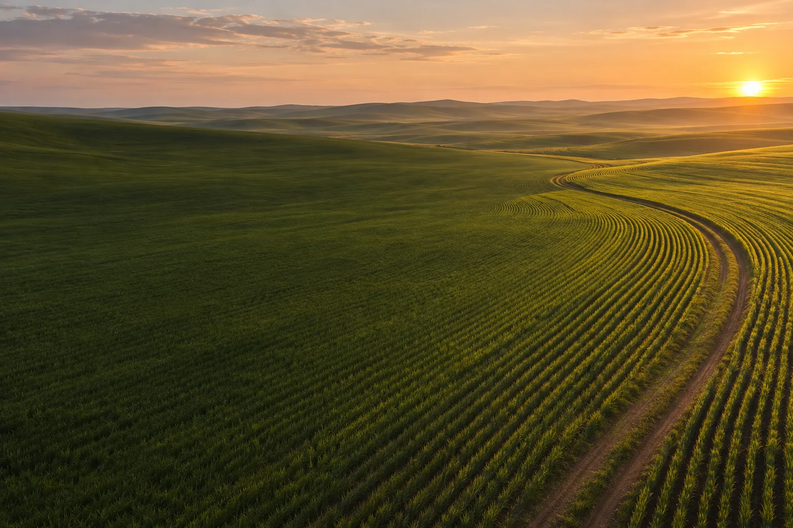
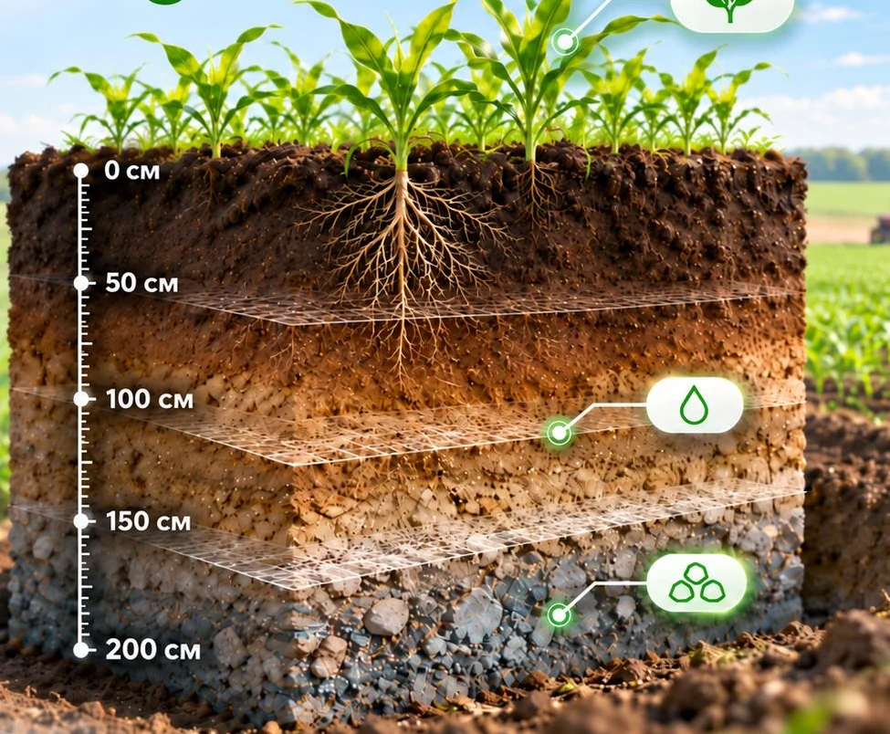
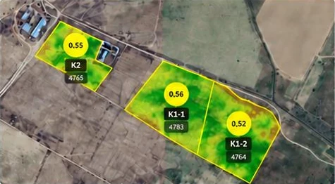
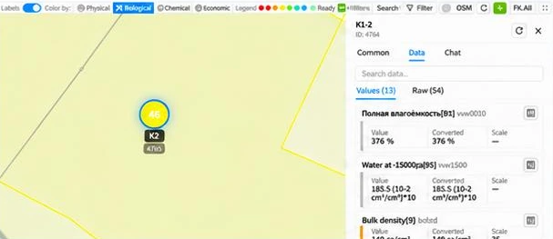
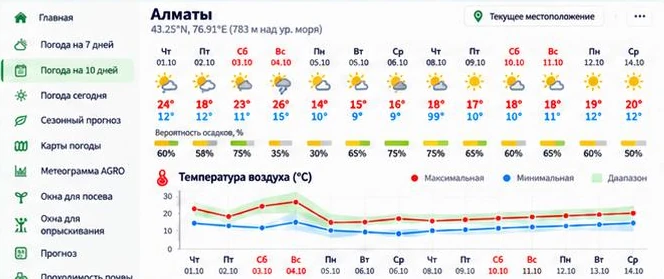
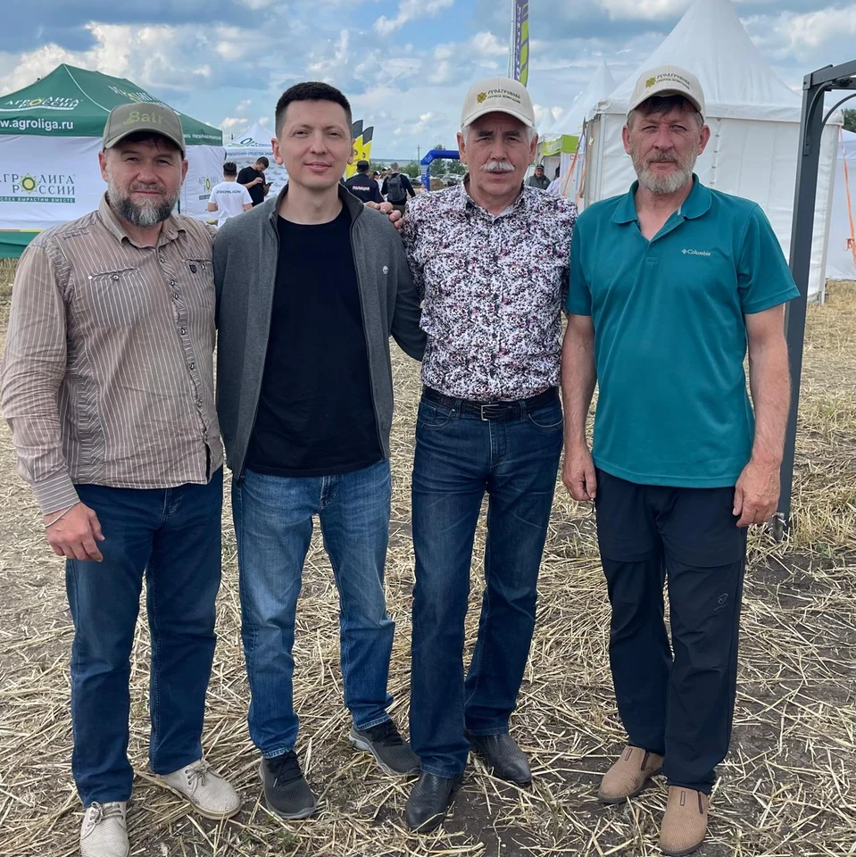

Цифровая агрономическая платформа
Меняем подход
к управлению полем
Помогаем понять, где и почему хозяйство теряет урожай и деньги, и что с этим делать уже в этом сезоне.
Как работает AgroInn
От почвенного профиля
к решениям в поле
Уплотнение, засоление или низкая влагоёмкость на глубине могут ограничивать рост корней и снижать урожайность.

-
Строим 3D-профиль почвы
Изучаем слои на глубине 0–200 см, чтобы выявить возможные ограничения для корней, доступной влаги и питания растений.
-
Сопоставляем данные поля
Связываем свойства почвы с многолетними данными об осадках и ветре, с рельефом и экосистемой поля.
-
Готовим план действий
Агрономы и почвоведы проверяют выводы. Хозяйство получает отчёт, технологическую карту и план работ. Эти данные использует AgroInn-Agent.
-
Следим за полем круглый год
Отслеживаем почву, погодные условия и развитие посевов, чтобы вовремя замечать отклонения.
Мониторинг полей
AgroInn-Agent работает вместе с агрономом хозяйства
Агент анализирует данные по каждому полю, выявляет риски и помогает решить, что проверить и когда запланировать работы.
Посмотреть демонстрацию
Состояние посевов
Вегетационные индексы помогают увидеть неоднородность посевов и выбрать зоны для осмотра.

Пахотный слой почвы
Свойства слоя 0–30 см на дату анализа, включая плотность сложения и влагоёмкость.

Погода и окна для работ
Прогноз осадков и температуры помогает выбрать время посева и других полевых работ.
Об AgroInn
Наука для почвы
В AgroInn агрономы и почвоведы работают вместе с исследователями, инженерами и специалистами по машинному обучению.
Опыт команды в агроконсультировании в пяти странах
Финалист конкурса 2025 года


Контакты в Казахстане
Давайте обсудим ваши поля
Расскажите о вашем хозяйстве. Разберём задачу и обсудим, с каких полей начать.